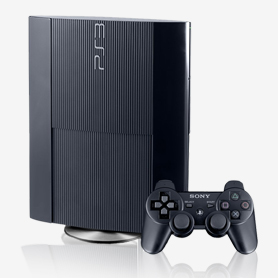

Sony durant tota l'època de Nintendo vs Sega no tenia molta rellevància perquè treballava amb Nintendo en la fabricació de consoles per a aquesta, però quan Nintendo va anunciar que passaria a col·laborar amb Philips per a aquesta tasca, Sony en veure la situació va decidir crear una divisió de videojocs contra la que ningú va poder competir en aquell moment.
Acabava de néixer la PlayStation, una consola de 32 bits amb la tecnologia de lectura de discs integrada que deixava de banda els cartutxos. Aquesta es va tornar coneguda junt amb títols com: Tekken, Final Fantasy VII, Crash Bandicoot i Resident Evil entre molts altres.

A la seva sortida va literalment destrossar el mercat, convertint-se en la més exitosa tant en vendes com en popularitat va anul·lar per complet a Sega i Nintendo.
Ni Nintendo amb la Nintendo 64 i el Mario 64, ni Sega amb la Sega saturn i posterior Dreamcast van aconseguir plantar-li cara, entrant així al nou segle.
En l’entrada al nou segle les companyies es comencen a posicionar i el mercat s’acaba distribuint en quatre sectors diferenciats: videoconsoles de sobretaula, videoconsoles portàtils, ordinadors i telèfons intel·ligents.
Consoles de sobretaula:
Per una banda tenim a Sony que en l’entrada al nou segle traurà a la venda la PlayStation 2 consola que es convertirà en la més venuda del món, un any més tard Microsoft entra a la competició de consoles amb la Xbox que no aconseguiria l’èxit esperat.
Nintendo també intentarà entrar al món de les consoles de sobretaula amb la Game Cube, després que aquesta consola fracassi completament Nintendo canviarà d’estratègia.

Microsoft s’avançava a Sony i Nintendo treien a la venda la Xbox360 el 2005, un any més tard Sony va respondre amb la PlayStation 3 que integra la tecnologia Blu-ray.

Nintendo va aparèixer el mateix any que Sony traient a la llum la Wii, que amb el nou sistema de controls, simplicitat dels jocs i filosofia diferent de les consoles de sobretaula anteriors de l’empresa van portar a Nintendo al capdamunt de la indústria una altra vegada.
El 2014 sortirà al mercat la PlayStation 4 i un any després la Xbox One, Aquestes videoconsoles es van adaptar definitivament a la connexió a internet, permetent a l’usuari la navegació per internet, accés a aplicacions externes als videojocs, la compra de videojocs en línia i l’adaptació de DLC (ampliacions dels videojocs).

L’any 2017 apareixerà la Nintendo Switch una consola creada per ser un híbrid entre portàtil i sobretaula, en el temps que porta al mercat ha tingut un impacte satisfactori i ha estat bastant revolucionària tot i basar-se en les consoles de Nintendo portàtils.
Consoles portàtils:
Nintendo tornarà l’any 2004 amb la Nintendo ds consola que afegiria una segona pantalla tàctil com a novetat que obriria als videojocs de Nintendo noves possibilitats.
Posteriorment trauria la Nintendo dsi, aquesta inclouria càmera i connexió a internet com a novetats.

Sony intentarà posar-se pel mig amb la psp (PlayStation portable) aquesta es basarà amb els controls de les PlayStation de sobretaula i no tindrà massa èxit.
En l’any 2011 arribaran al mercat la Nintendo 3DS que afegeix com a novetat la pantalla en 3D i la ps vita, aquestes noves consoles també començaran a utilitzar internet i es caracteritzaran per la possibilitat del multijugador.
Ordinadors:
Al món dels ordinadors regnaven els shooter en primera persona en línia com Call of Duty o Battlefield 1942, aquests són la clara evolució del seu predecessor DOOM.
També triomfaran els jocs d’estratègia a temps real com Age of Empires o World of Warcraft de Blizzard, Warcraft és un joc molt important perquè batrà tots els rècords de vendes com de jugabilitat per part de la companyia, proporcionant als jugadors una experiència renovada començant amb la massificació dels MMORPG (jocs de rol multijugador massius).
No s’ha d’oblidar Steam, una plataforma de distribució de continguts digitals, gestió digital de drets, comunicacions i serveis multijugador de Valve, va ser llançada el 12 de setembre de 2003.
Encara que al principi no va tenir molt bon acolliment Valve va decidir agregar la llista d'amics, el mercat, els fòrums o el steam cloud (l'emmagatzematge en el núvol).
Tot això sumat al llançament del Half life 2 exclusiu per a Steam va fer que la plataforma començarà a créixer ràpidament convertint-se així en indispensable per a qualsevol jugador d’ordinador en l’actualitat.

Telèfons intel·ligents:
Paral·lelament a tota aquesta gran indústria, el desenvolupament dels telèfons mòbils i l’arribada dels Telèfon intel·ligent també ha provocat un gran creixement dels videojocs en aquests distribuït per per l’AppleStore amb els sistemes IOS i la Play Store als sistemes Android.